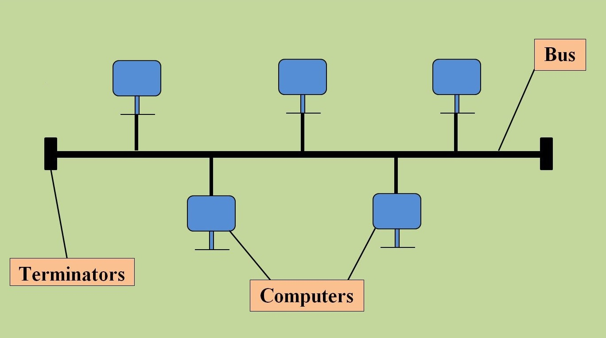
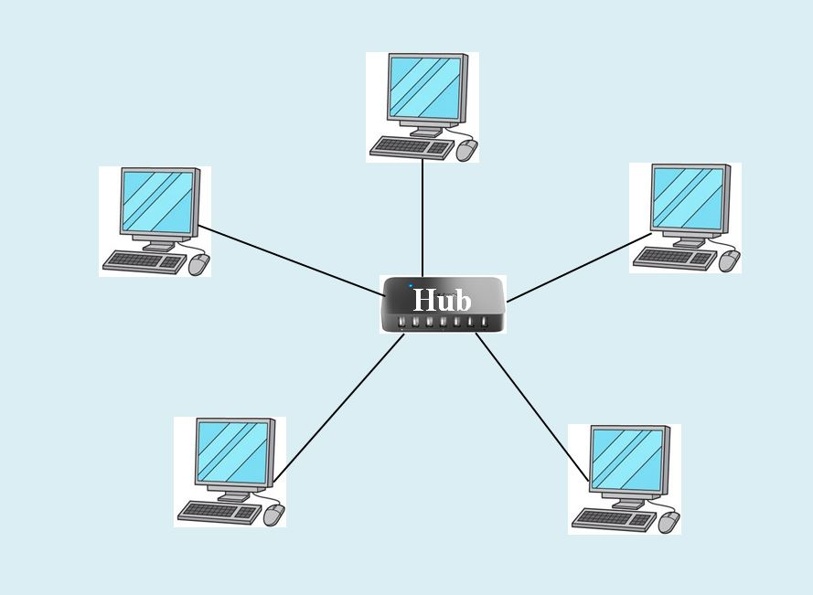
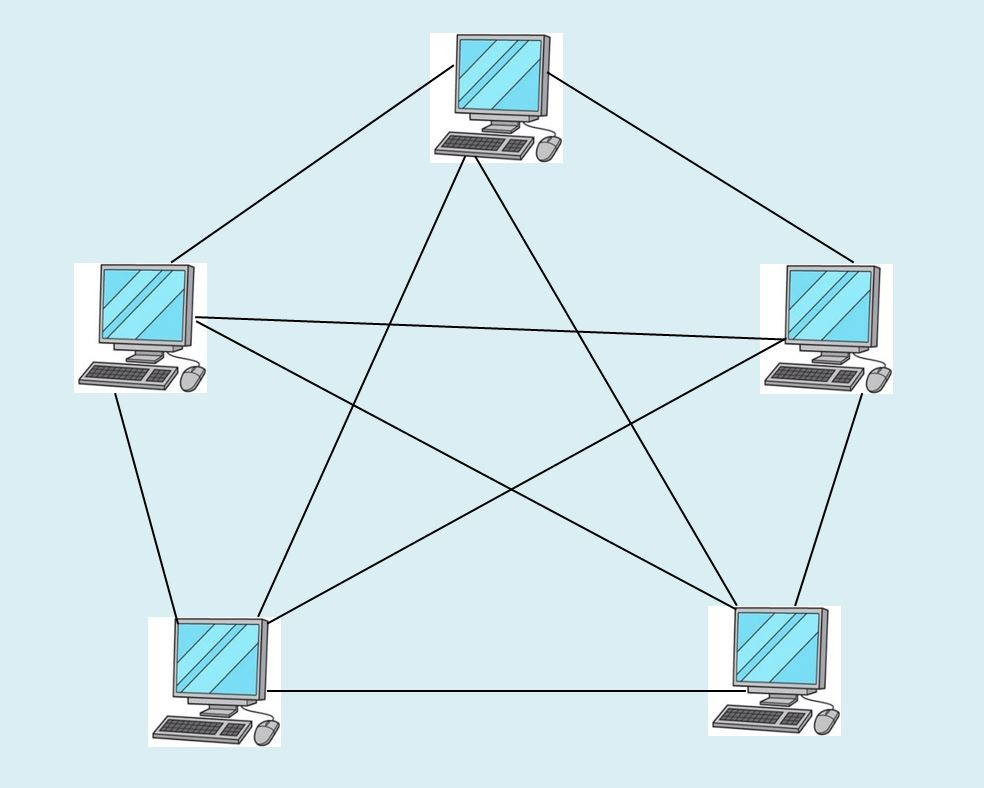
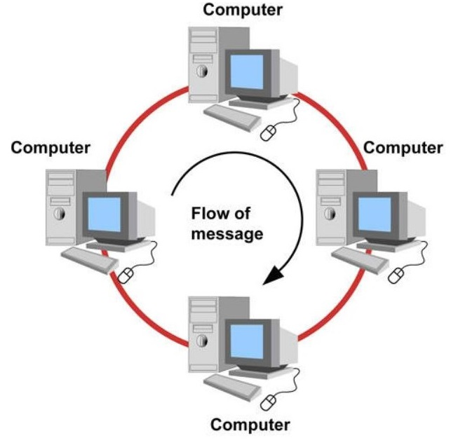

Network is combination of two more computers connect together for sharing resources and information.
The purpose of a network is that of routing, managing and storing rapidly changing data. When
networks
in multiple locations are connected using services available from phone companies, people can send
e-mails, share links over the global Internet, or hold video conferences in real-time with other
remote
users.
Every network includes:
Computer network components include both the physical parts as well as the software needed to set up a computer network.
A local area network (LAN) is a network that connects computers and equipment in a limited geographic area such as a home, school, laboratory, or office building. Each computer or device on a network is called a node, which often shares resources such as printers, large hard disks, and programs. Generally, LANs use wires (physical cables) for connectivity between devices.
A metropolitan area network (MAN) is a network that spans an entire metropolitan area. It is used to connect to cover a city or town. Its range can be around 50 km. MANs use the same technology as LANs but cover a much wider geographic area.
Wide Area Network (WAN) covers a large distance like a state, country or continent. WAN uses fiber optics cables and even satellites. Here communication circuits are connected with the help of hardware devices called routers. Internet is the popular one that comes under WAN.
A network topology is the arrangement with which computer systems or network devices are connected to
each other. Topologies can define both the physical and logical aspects of the network. Both logical
and
physical topologies can be the same or different in the same network.
The various topologies are-
A bus network is a network architecture consisting of a single signal central cable to which all devices are connected. The central cable is called a bus. The bus transmits data in both directions. Only one device can transmit data at a time. Simply adding/removing devices from the network is easy. A failure of one device does not affect the other device, but, if the bus (central cable) fails then the network fails.
A star network topology, in its simplest form, consists of a central hub, which acts as a router for transmitting mass. All devices are connected to a central hub. All data passes through the hub. If a device fails, there is no impact on the network, only the network will be affected if the hub fails.
Mesh topology is a type of networking in which all computers are connected to each other. In mesh topology, the connections between devices occur randomly. Connected nodes can be computers, switches, hubs, or any other device. In this topology setup, even if one of the connections goes down, it allows the other nodes to be distributed.
A ring network is a network topology in which each node is actually connected to two other nodes, forming a single continuous path for signals through each node - a ring. Data travels from node to node, with each node handling how each packet is handled.
